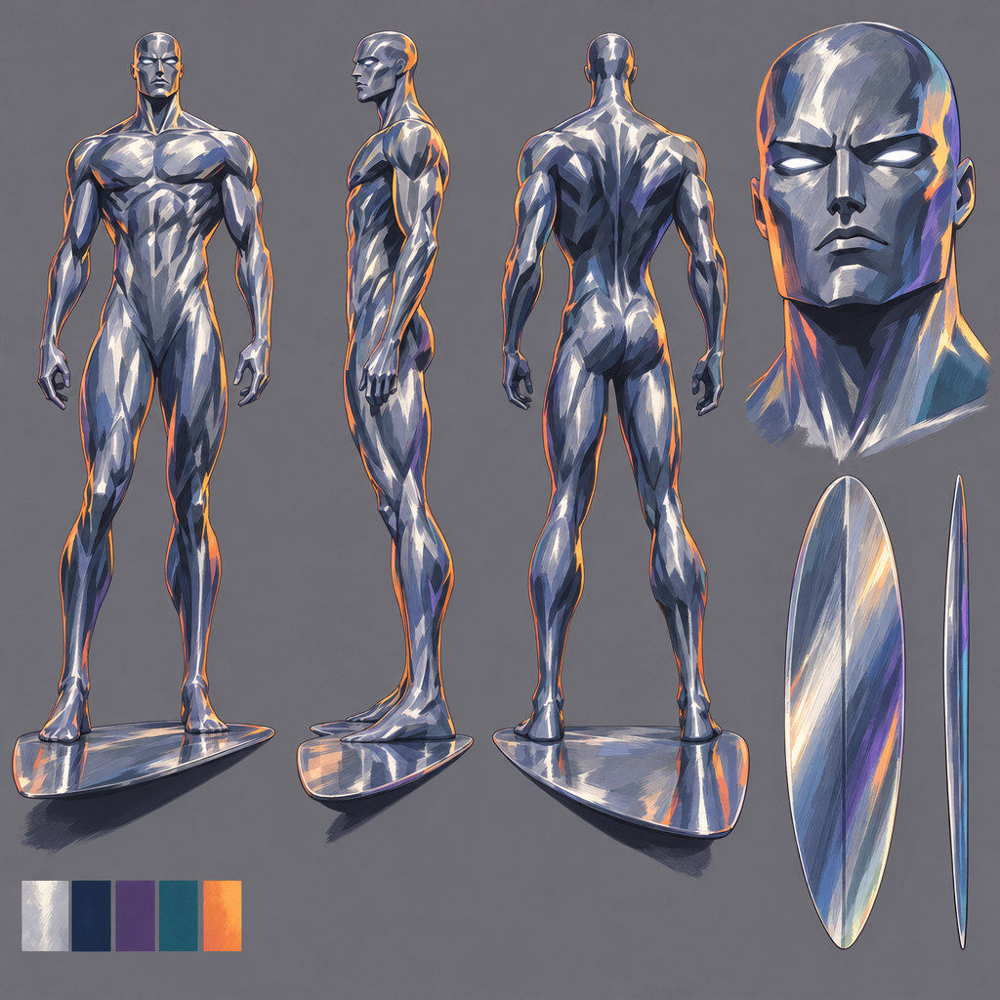
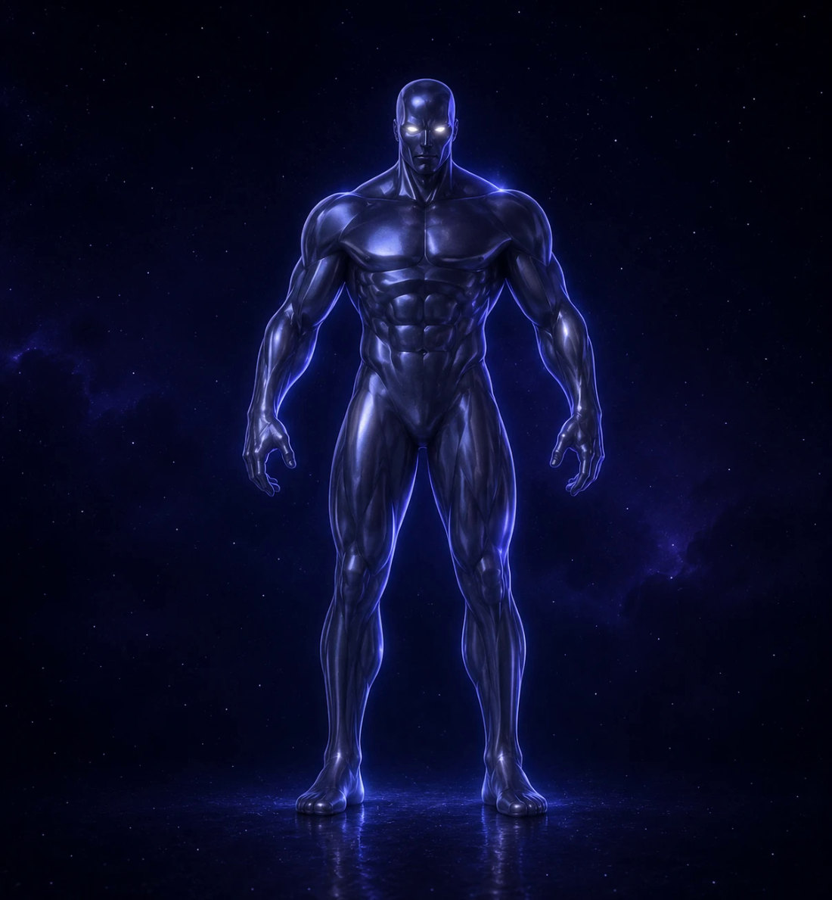
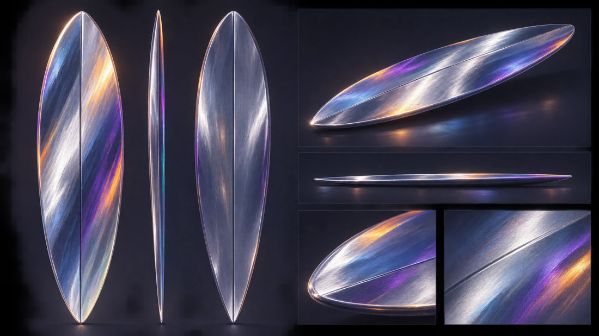

Karakter, tahta ve 3B eşleme
Karakter sayfası ve yanardöner sörf tahtası tasarımıyla başlayan süreç, AI çekiminin Blender’daki 3B kil modelle kare kare eşlenmesiyle devam etti; poz, kamera ve hareket iki tarafta birebir örtüşüyor.


